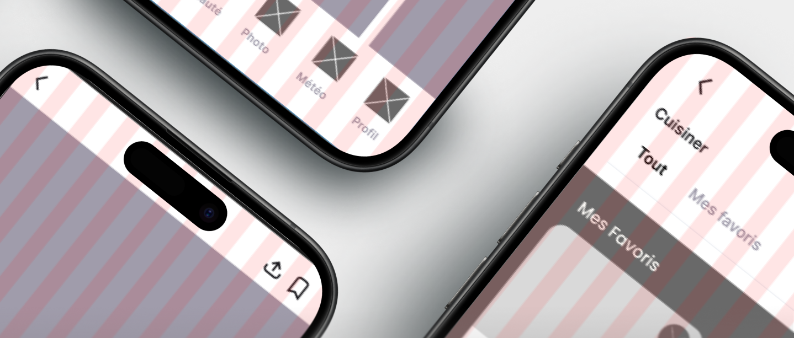
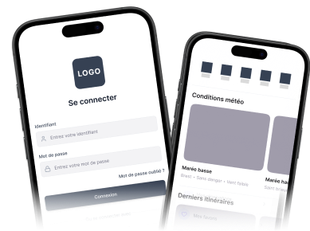
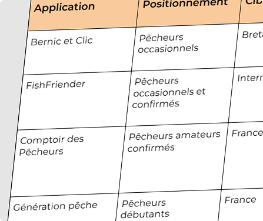
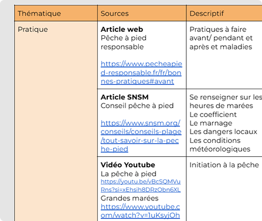
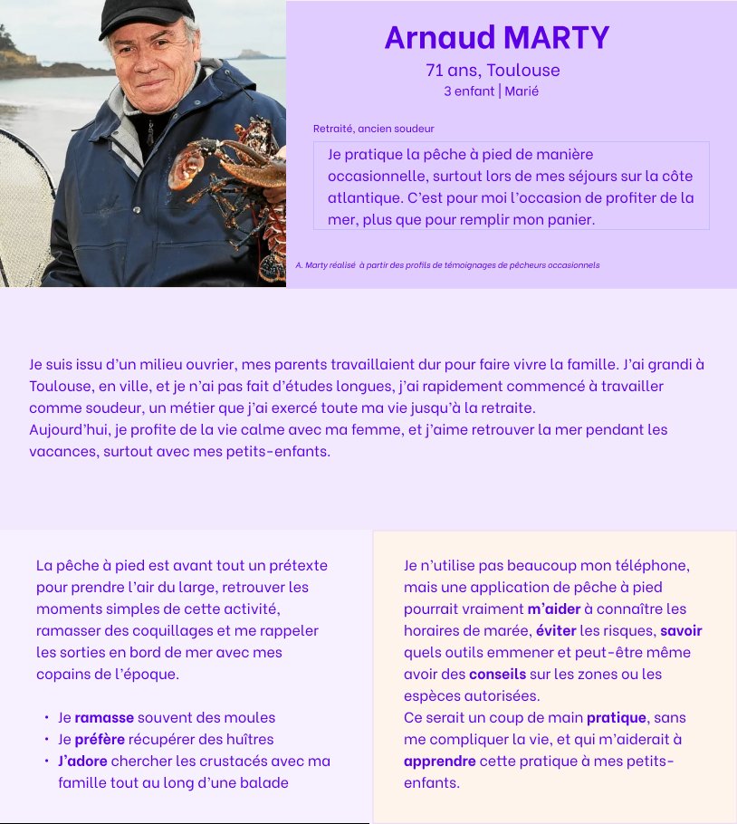
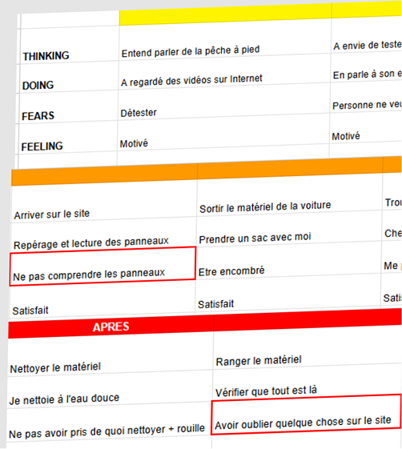
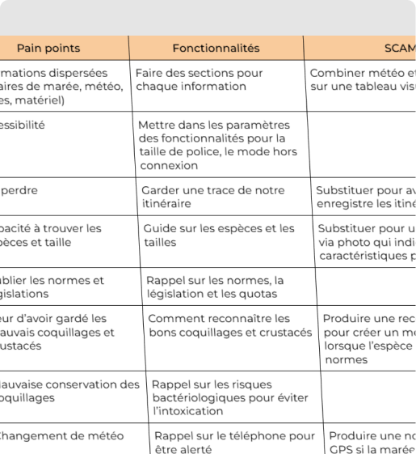
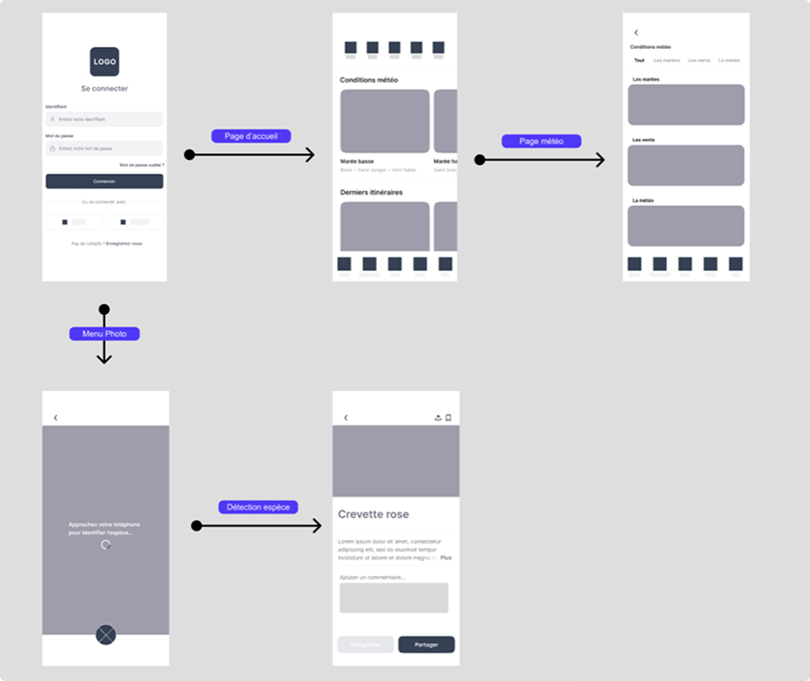
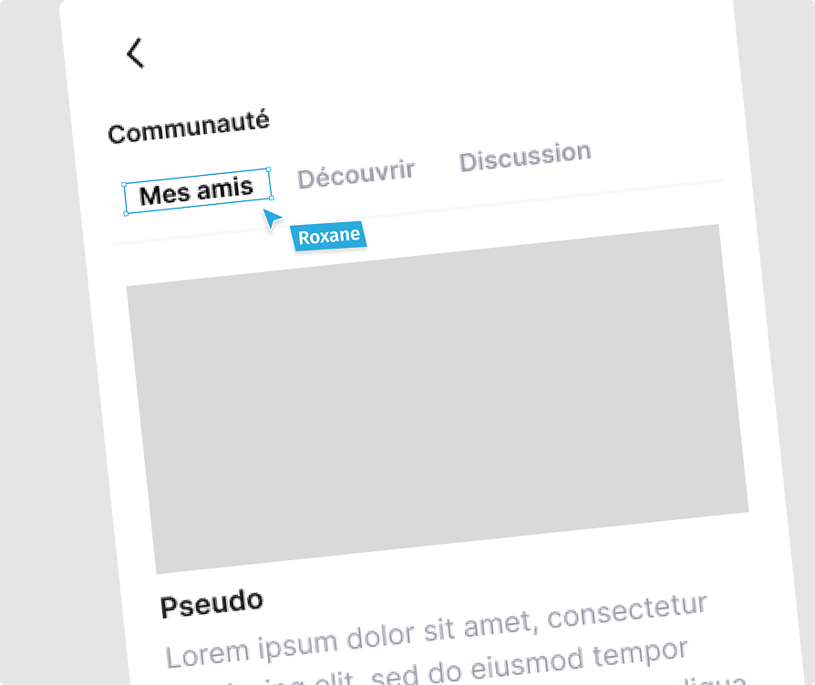

CONTEXTE
Ce projet consiste à créer la maquette d’une application mobile de pêche à pied à destination des débutants. Le but est de créer une solution intuitive et pédagogique pour accompagner les nouveaux pratiquants dans la découverte et la maîtrise des bonnes pratiques de la pêche à pied.
Ce projet a été réalisé en binôme avec Elouen LE PENDEVEN.
OUTILS UTILISÉS
Figma
Wireframes

étapes
Planification et Exploration : Benchmark et recherches documentaires


Avant de réaliser les wireframes de l’application mobile, nous avons réalisé un
benchmark pour analyser les solutions déjà existantes sur le marché
pour identifier
les fonctionnalités à implémenter et à améliorer.
Pour approfondir le développement de l’application et pour rester cohérent, nous
avons également mené des recherches documentaires sur les besoins,
les pratiques et
les réglementations sur la pêche à pied.
Identification des usagers : Persona

La création du persona d’Arnaud Marty a été le point de départ
de notre
réflexion UX.
Ce profil de retraité, peu habitué aux outils numériques, nous a poussé à
concevoir une interface qui privilégie la clarté.
En nous mettant à sa place, nous avons identifié que la peur de "faire une
erreur" était son principal frein. Cela se traduit par des choix comme : une
hiérarchie visuelle pertinente, des textes d’explications et des messages de
confirmation.
En concevant pour Arnaud Marty, l'objectif est de créer une application
réellement inclusive où l'information essentielle reste
accessible en un coup d'œil, évitant toute barrière technique.
d'œil, évitant toute barrière technique.
Cette approche permet une expérience fluide pour lui, mais
aussi pour des
profils plus à l’aise avec le numérique.
User Journey Map : Pain points

Suite aux recherches documentaires, l'enjeu était d'accompagner un utilisateur
novice dans une activité avec de fortes contraintes (marées, météo,
réglementation). De ce fait, nous avons élaboré une User journey
map qui décrit
les différentes étapes et interactions du parcours utilisateur.
Nous avons identifié des points de friction avant même qu'il
n'arrive sur la
côte : la difficulté à trouver le bon endroit et la peur de se tromper dans les
horaires de marée.
Cette analyse nous permet de transformer ces craintes en
fonctionnalités allant
de l’aide à la préparation du matériel, à la reconnaissance des crustacés
jusqu’aux bonnes pratiques de consommation de la récolte.
Idéation : Les fonctionnalités

Ensuite, nous avons établi un tableau mettant en avant les pain points, en
fonction du User Journey Map, puis nous les avons associées à des
fonctionnalités pour y remédier puis, elles ont été enrichies avec la méthode
SCAMPER pour les innover ou améliorer.
Ainsi nous avons pensé à des fonctionnalités comme :
- Rassemblerles météos et marées en une seule interface
- Enregistrerles itinéraires de pêche favoris
- Reconnaîtreles espèces grâce à la caméra du téléphone
- Visionner des tutoriels
Génération : Conception de l'interface


Enfin, nous avons conçu des wireframes qui correspondent aux fonctionnalités pensées précédemment.
CE QUE JE RETIENS
Ce projet a été très pertinent pour mettre en pratique toutes les méthodologies apprises.
J’ai appris que pour créer une application, il ne suffit pas de concevoir un design sur un thème
donné, mais qu’il faut mener des recherches approfondies pour comprendre les utilisateurs cibles, se
mettre à la place d'un profil et les comprendre.
Cela m'a aussi montré l'importance de confronter le design aux contraintes réelles, comme la
gestion des marées ou le manque de réseau.
En utilisant des outils comme la méthode SCAMPER, j'ai
réalisé qu'un bon designer ne crée pas seulement des interfaces, mais apporte des solutions qui
facilitent le parcours des utilisateurs.